MAXimal
добавлено: 17 Jul 2009 23:00
редактировано: 16 Aug 2009 1:59
Содержание [скрыть]
Дерево Штерна-Броко. Ряд Фарея
Дерево Штерна-Броко
Дерево Штерна-Броко — это изящная конструкция, позволяющая построить множество всех неотрицательных дробей. Она была независимо открыта немецким математиком Морицем Штерном (Moritz Stern) в 1858 г. и французским часовщиком Ахиллом Броко (Achille Brocot) в 1861 г. Впрочем, по некоторым данным, эта конструкция была открыта ещё древнегреческим учёным Эратосфеном (Eratosthenes).
На нулевой итерации у нас есть две дроби:
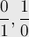
(вторая величина, строго говоря, дробью не является; её можно понимать как несократимую дробь, обозначающую бесконечность)Дальше, на каждом последующей итерации берётся этот список дробей и между каждыми двумя соседними дробями 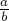 и 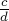 вставляется их медианта, т.е. дробь 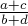.
Так, на первой итерации текущее множество будет таким:
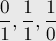
На второй:
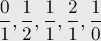
На третьей:
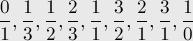
Продолжая этот процесс до бесконечности, утверждается, можно получить множество всех неотрицательных дробей. Более того, все получаемые дроби будут различными (т.е. в текущем множестве каждая дробь встречается не более одного раза), несократимыми (числители и знаменатели будут получаться взаимно простыми). Наконец, все дроби будут автоматически упорядоченными по возрастанию. Доказательство всех этих замечательных свойств дерева Штерна-Броко будет приведено чуть ниже.
Осталось только привести изображение самого дерева Штерна-Броко (пока мы описывали его с помощью меняющегося множества). В корне этого бесконечного дерева находится дробь 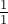, а слева и справа от дерева находятся дроби 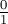 и 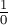. Любая вершина дерева имеет двух сыновей, каждый из которых получается как медианта своего левого предка и правого предка:
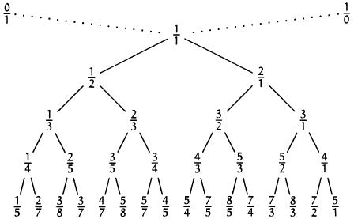
Доказательство
Упорядоченность. Она доказывается очень просто: заметим, что медианта двух дробей всегда находится между ними, т.е.:
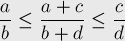
при условии, что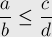
Доказывается это просто приведением трёх дробей к общему знаменателю.Поскольку на нулевой итерации упорядоченность имела место, то она будет сохраняться и на каждой новой итерации.
Несократимость. Для этого покажем, что на любой итерации для любых двух соседних в списке дробей и выполняется:
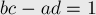
Действительно, вспоминая Диофантовы уравнения с двумя неизвестными (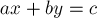), получаем из этого утверждения, что 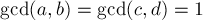, что нам и требуется.Итак, нам надо доказать истинность утверждения 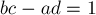 на любой итерации. Докажем его также по индукции. На нулевой итерации это свойство выполнялось (в чём нетрудно убедиться). Теперь пусть оно было выполнено на предыдущей итерации, покажем, что оно выполнено на текущей итерации. Для этого надо рассмотреть тройку дробей-соседей в новом списке:
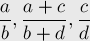
Для них условия принимают вид: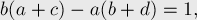
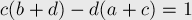
Наличие всех дробей. Доказательство этого свойства тесно связано с алгоритмом нахождения дроби в дереве Штерна-Броко. Учитывая, что в дереве Штерна-Броко все дроби упорядочены, получаем, что для любой вершины дерева в её левом поддереве находятся дроби, меньшие её, а в правом — большие её. Отсюда получаем и очевидный алгоритм поиска какой-либо дроби в дереве Штерна-Броко: вначале мы находимся в корне; сравниваем нашу дробь с дробью, записанной в текущей вершине: если наша дробь меньше, то переходим в левое поддерево, если наша дробь больше — переходим в правое, а если совпадает — нашли дробь, поиск завершён.
Чтобы доказать, что бесконечное дерево Штерна-Броко содержит все дроби, достаточно показать, что этот алгоритм поиска дроби завершится за конечное число шагов для любой заданной дроби. Этот алгоритм можно понимать так: у нас есть текущий отрезок 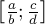, в котором мы ищем нашу дробь 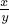. Изначально 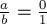, 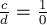. На каждом шаге дробь сравнивается с медиантой концов отрезка, т.е. с , и в зависимости от этого мы либо останавливаем поиск, либо переходим в левую или правую часть отрезка. Если бы алгоритм поиска дроби работал бесконечно долго, то следующие условия были бы выполнены на каждой итерации:
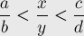
Но их можно переписать в таком виде: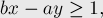
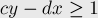
Тогда, умножая первое на 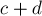, а второе — на 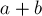, и складывая их, получаем:
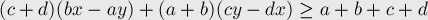
Раскрывая скобки слева и учитывая, что (см. доказательство предыдущего свойства), окончательно получаем: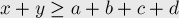
А поскольку на каждой итерации хотя бы одна из переменных 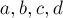 строго возрастает, то процесс поиска дроби будет содержать не более 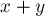 итераций, что и требовалось доказать.Алгоритм построения дерева
Чтобы построить любое поддерево дерева Штерна-Броко, достаточно знать только левого и правого предков. Изначально, на первом уровне, левым предком является , а правым — . По ним можно вычислить дробь в текущей вершине, а затем запуститься от левого и правого сыновей (левому сыну передав себя в качестве правого предка, а правому сыну — в качестве левого предка).
Псевдокод этой процедуры, пытающийся построить всё бесконечное дерево:
void build (int a = 0, int b = 1, int c = 1, int d = 0, int level = 1) { int x = a+c, y = b+d; ... вывод текущей дроби x/y на уровне дерева level build (a, b, x, y, level + 1); build (x, y, c, d, level + 1); }
Алгоритм поиска дроби
Алгоритм поиска дроби был уже описан при доказательства того, что дерево Штерна-Броко содержит все дроби, повторим его здесь. Этот алгоритм — фактически алгоритм бинарного поиска, или алгоритм поиска заданного значения в бинарном дереве поиска. Изначально мы стоим в корне дерева. Стоя в текущей вершине, мы сравниваем нашу дробь с дробью в текущей вершине. Если они совпадают, то процесс останавливаем — мы нашли дробь в дереве. Иначе, если наша дробь меньше дроби в текущей вершине, то переходим в левого сына, иначе — в правого.
Как было доказано в свойстве о том, что дерево Штерна-Броко содержит все неотрицательные дроби, при поиске дроби алгоритм совершит не более итераций.
Приведём реализацию, которая возвращает путь до вершины, содержащей заданную дробь , возвращая его в виде последовательности символов 'L'/'R': если текущий символ равен 'L', то это обозначает переход в дереве в левого сына, а иначе — в правого (изначально мы стоим в корне дерева, т.е. в вершине с дробью ). На самом деле, такая последовательность символов, существующая и однозначно определяющая любую неотрицательную дробь, называется системой счисления Штерна-Броко.
string find (int x, int y, int a = 0, int b = 1, int c = 1, int d = 0) { int m = a+c, n = b+d; if (x == m && y == n) return ""; if (x * n < y * m) return 'L' + find (x, y, a, b, m, n); else return 'R' + find (x, y, m, n, c, d); }
Иррациональным числам в системе счисления Штерна-Броко будут соответствовать бесконечные последовательности символов; если известна какая-то наперёд заданная точность, то можно ограничиться некоторым префиксом этой бесконечной последовательности. В процессе этого бесконечного поиска иррациональной дроби в дереве Штерна-Броко алгоритм будет каждый раз находить простую дробь (с постепенно возрастающими знаменателями), обеспечивающую лучшее приближение этого иррационального числа (это применение как раз важно в часовой технике, и в связи с этим Ахилл Броко и открыл это дерево).
Последовательность Фарея
Последовательностью Фарея порядка  называется множество всех несократимых дробей между 0 и 1, знаменатели которых не превосходят , причём дроби упорядочены в порядке возрастания.
называется множество всех несократимых дробей между 0 и 1, знаменатели которых не превосходят , причём дроби упорядочены в порядке возрастания.
Эта последовательность названа в честь английского геолога Джона Фарея (John Farey), который попытался в 1816 г. доказать, что в ряде Фарея любая дробь является медиантой двух соседних. Насколько известно, его доказательство было неверным, а правильное доказательство предложил несколько позже Коши (Cauchy). Впрочем, ещё в 1802 г. математик Харос (Haros) в одной из своих работ пришёл практически к тем же результатам.
Последовательности Фарея обладают и множеством собственных интересных свойств, однако наиболее очевидна их связь с деревом Штерна-Броко: фактически, последовательность Фарея получается удалением некоторых ветвей из дерева. Или можно говорить, что для получения последовательности Фарея нужно взять множество дробей, получаемое при построении дерева Штерна-Броко на бесконечной итерации, и оставить в этом множестве только дроби со знаменателями, не превосходящими и числителями, не превосходящими знаменатели.
Из алгоритма построения дерева Штерна-Броко следует и аналогичный алгоритм для последовательностей Фарея. На нулевой итерации включим в множество только дроби и . На каждой следующей итерации мы между каждыми двумя соседним дробями вставляем их медианту, если её знаменатель не превосходит . Рано или поздно в множестве перестанут происходить какие-либо изменения, и процесс можно останавливать — мы нашли искомую последовательность Фарея.
Вычислим длину последовательности Фарея. Последовательность Фарея порядка содержит все элементы последовательности Фарея порядка  , а также все несократимые дроби со знаменателями, равными , но это количество, как известно, равно
, а также все несократимые дроби со знаменателями, равными , но это количество, как известно, равно  . Таким образом, длина 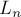 последовательности Фарея порядка выражается по формуле:
. Таким образом, длина 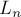 последовательности Фарея порядка выражается по формуле:
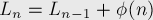
или, раскрывая рекурсию: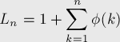
Литература